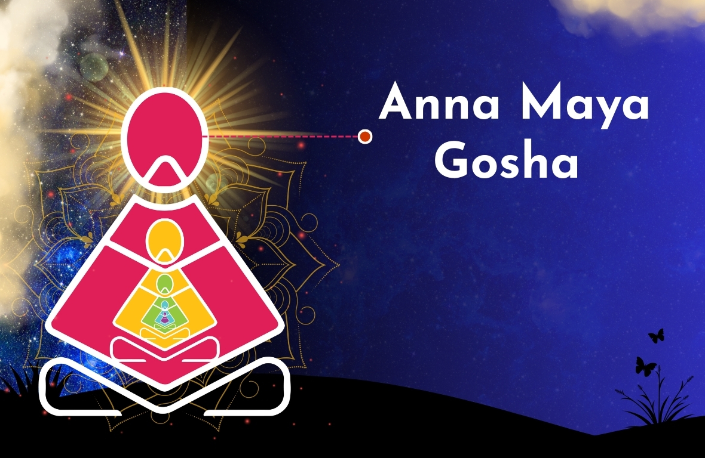

Annamaya Kosha (Anna Maya Kosha) – Meaning, Functions & Physical Body in Pancha Kosha
Anna Maya Gosha , referred to in yoga philosophy as the "food sheath" or the physical body, is the outermost layer of the human being in the Pancha Kosha ( 5 -sheath) model .
It is described in the Taittiriya Upanishad and is utilized within broader Yoga studies including interpretations of Patanjali’s teachings. Anna Maya Gosha is the gross, physical body ( Sthula Sarira) comprised of flesh, blood, bones, and skin, sustained by the intake of food.

Detailed Analysis of Annamaya Kosha
- Definition & Composition: Derived from Anna (food) and Maya (consisting of), it signifies that the body is produced and maintained by food. It is the densest and slowest vibrating sheath, acting as the physical anchor for all human experiences.
- Functionality: It is operational during the waking state (Jagrata). It experiences pleasure and pain, disease and health, and is the medium through which we interact with the physical world.
- The "Food Body" Concept: According to yogic tradition, the body is essentially a "heap of food" transformed into human tissue.
- Relationship to Other Koshas: It does not exist independently; it is supported by the other four inner koshas—Pranamaya (energy), Manomaya (mind), Vijnanamaya (intellect), and Anandamaya (bliss). The physical body is often described as a "cage of flesh and blood" that houses these subtler layers.
- Death and Rebirth: Birth and death are considered characteristics or attributes of the Annamaya Kosha, while the inner self is immortal.
- Patanjali Yoga & Asana: While the Yoga Sutras of Patanjali primarily focus on the mind (Manomaya/Vijnanamaya), the practice of Asana is directly aimed at perfecting the Annamaya Kosha. A well-functioning, flexible, and healthy body (Annamaya) is crucial for sustained meditation.
- Ayurvedic Interrelatedness: The Annamaya Kosha houses Annagni, which includes Jatharagni (digestive fire), metabolizing the earth element into the body's building blocks. Poor digestion leads to contaminated Agni and illness. Ayurveda emphasises proper nutrition as a core healing mechanism.
- Scientific Perspective: Modern science equates this to the anatomical and physiological layer. Research emphasizes that a disconnected or unwholesome relationship with this layer can lead to behavioral issues like binge eating, poor self-care, or addictions.
Anna Maya Gosha - Simplified Version & Daily Application
- Simple Definition: The physical body—your bones, muscles, and organs.
- Goal: To keep the body healthy, nourished, and steady.
- Daily Practice:
- Mindful Eating: Eating food that is nutritious (Satvik) rather than just filling, considering it a way to fuel the "food body".
- Physical Activity: Regular yoga asanas, exercises, and movement to maintain health.
- Hygiene & Care: Proper grooming, resting, and self-massage (Abhyanga).
- Awareness: Recognizing that while the body is not the permanent self, it is an essential vessel that requires constant care to enable spiritual growth.
Modern Perspective
Mind-Body Unity: The Annamaya Kosha is the hardware, while the others are software; all five are interdependent for total health.If the energy body (Pranamaya) is activated, it can prevent diseases in the physical body.
Impact of Neglect: Disassociation from the Annamaya Kosha can lead to a disregard for the body's needs, resulting in, for example, self-harming habits .
Explore Within . Realize your True Self With Sittha Viruthi Yoga
Sittha Viruthi Yoga offers a comprehensive and structured journey into the timeless wisdom of spiritual science and yogic practice. Our programs begin with the strong foundational courses Nar Karma , Suya Viruthi , Yoga Viruthi and gradually leads to advanced explorations of the Pancha Koshas, the Patanjali Yoga Sutras, and the sacred teachings of the Vedas and Upanishads.
Each level is thoughtfully designed to deepen the understanding of human existence—guiding the individual from basic awareness to profound inner realization. Through this step-by-step approach, participants gain not just knowledge, but a meaningful and transformative experience.
Whether you are beginning your spiritual journey or seeking higher insights, Sittha Viruthi Yoga provides a nurturing space to grow, evolve, and connect with your true self.